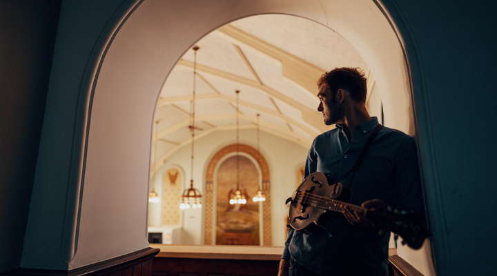
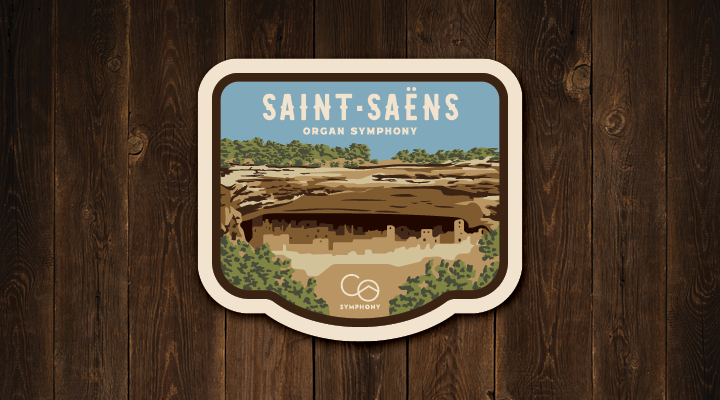

Journey with us into our second century as we take a trip through magnificent symphonic works that you’ve come to know and love, reach new heights with elevated guest artists, and explore additional terrains with innovative and diverse programming.
October
Sunday
Monday
Tuesday
Wednesday
Thursday
Friday
Saturday
10
The Colorado
Symphony Cello
Ensemble
Members of our talented cello section showcase the depth and versatility of the instrument, featuring an array of classical masterpieces and contemporary compositions.
7:30 PM

12
Colorado Symphony Chamber Ensemble at Steamboat Art Museum / Chris Thile with the Colorado Symphony
Join us as we head to Steamboat Springs for an eclectic evening of chamber music at the Steamboat Art Museum.
Chris Thile’s brand-new work for mandolin, vocals, and orchestra — Attention! — will feature his trademark whimsical songwriting and storytelling, instrumental virtuosity, and ever-present sense of humor.
7:00 PM /
7:30 PM


18
Verdi Requiem: 40th Anniversary Celebration
of the Colorado Symphony Chorus
Celebrate the 40th Anniversary of the world-renowned Colorado Symphony Chorus with a renewal of Verdi’s monumental Requiem.
7:30 PM

19
Verdi Requiem: 40th Anniversary Celebration
of the Colorado Symphony Chorus
Celebrate the 40th Anniversary of the world-renowned Colorado Symphony Chorus with a renewal of Verdi’s monumental Requiem.
7:30 PM
20
Verdi Requiem: 40th Anniversary Celebration
of the Colorado Symphony Chorus
Celebrate the 40th Anniversary of the world-renowned Colorado Symphony Chorus with a renewal of Verdi’s monumental Requiem.
1:00 PM
25
Disney in Concert: Tim Burton's The Nightmare Before Christmas
The Nightmare Before Christmas will be projected on the big screen with dialogue, singing, and effects accompanied by Danny Elfman’s darkly charming score played live by your Colorado Symphony.
7:30 PM

26
Disney in Concert: Tim Burton's The Nightmare Before Christmas
The Nightmare Before Christmas will be projected on the big screen with dialogue, singing, and effects accompanied by Danny Elfman’s darkly charming score played live by your Colorado Symphony.
7:30 PM
27
Halloween Spooktacular!
It’s a spooktacular event for all boys and ghouls! This family-favorite concert features music from films, television, and more!
2:30 PM

November
Sunday
Monday
Tuesday
Wednesday
Thursday
Friday
Saturday
1
FINAL FANTASY VII REBIRTH Orchestra
World Tour
Members of our talented cello section showcase the depth and versatility of the instrument, featuring an array of classical masterpieces and contemporary compositions.
7:30 PM

2
FINAL FANTASY VII REBIRTH Orchestra
World Tour
Members of our talented cello section showcase the depth and versatility of the instrument, featuring an array of classical masterpieces and contemporary compositions.
7:30 PM
8
Rachmaninoff Piano Concerto No. 2 with
Simon Trpceski
Experience an unforgettable evening as the Colorado Symphony and Principal Conductor Peter Oundjian showcase iconic works by Rachmaninoff and Mahler.
7:30 PM

9
Rachmaninoff Piano Concerto No. 2 with
Simon Trpceski
Experience an unforgettable evening as the Colorado Symphony and Principal Conductor Peter Oundjian showcase iconic works by Rachmaninoff and Mahler.
7:30 PM
10
Rachmaninoff Piano Concerto No. 2 with
Simon Trpceski
Experience an unforgettable evening as the Colorado Symphony and Principal Conductor Peter Oundjian showcase iconic works by Rachmaninoff and Mahler.
1:00 PM
16
Béla Fleck Plays Gershwin's Rhapsody
in Blue
Celebrate the 40th Anniversary of the world-renowned Colorado Symphony Chorus with a renewal of Verdi’s monumental Requiem.
7:30 PM

17
Béla Fleck Plays Gershwin's Rhapsody
in Blue
Celebrate the 40th Anniversary of the world-renowned Colorado Symphony Chorus with a renewal of Verdi’s monumental Requiem.
1:00 PM
22
Saint-Saëns Organ Symphony with Christopher Dragon
With Time for Three in town and ever-energetic Resident Conductor Christopher Dragon at the helm, this is Classical at its most current.
7:30 PM

23
Saint-Saëns Organ Symphony with Christopher Dragon
With Time for Three in town and ever-energetic Resident Conductor Christopher Dragon at the helm, this is Classical at its most current.
7:30 PM
24
Saint-Saëns Organ Symphony with Christopher Dragon
With Time for Three in town and ever-energetic Resident Conductor Christopher Dragon at the helm, this is Classical at its most current.
1:00 PM
The Colorado Symphony Cello Ensemble
Members of our talented cello section showcase the depth and versatility of the instrument, featuring an array of classical masterpieces and contemporary compositions.
Thu, Oct 10, 7:30 PM
Colorado Symphony Chamber Ensemble at Steamboat Art Museum
Join us as we head to Steamboat Springs for an eclectic evening of chamber music at the Steamboat Art Museum on October 12, 2024.
Sat, Oct 12, 7:00 PM
Chris Thile with the Colorado Symphony
Chris Thile’s brand-new work for mandolin, vocals, and orchestra — Attention! — will feature his trademark whimsical songwriting and storytelling, instrumental virtuosity, and ever-present sense of humor.
Sat, Oct 12, 7:30 PM
Verdi Requiem: 40th Anniversary Celebration of the Colorado Symphony Chorus
Celebrate the 40th Anniversary of the world-renowned Colorado Symphony Chorus with a renewal of Verdi’s monumental Requiem.
Fri, Oct 18, 7:30 PM
Fri, Oct 19, 7:30 PM
Sun, Oct 20, 1:00 PM
Disney in Concert: Tim Burton's The Nightmare Before Christmas
The Nightmare Before Christmas will be projected on the big screen with dialogue, singing, and effects accompanied by Danny Elfman’s darkly charming score played live by your Colorado Symphony.
Fri, Oct 25, 7:30 PM
Sat, Oct 26, 7:30 PM
Halloween Spooktacular!
It’s a spooktacular event for all boys and ghouls! This family-favorite concert features music from films, television, and more!
Sun, Oct 27, 2:30 PM
FINAL FANTASY VII REBIRTH Orchestra World Tour
AWR Music Productions and Square Enix are proud to introduce FINAL FANTASY VII REBIRTH Orchestra World Tour, an electrifying new concert based entirely on the groundbreaking game from SQUARE ENIX.
Fri, Nov 1, 7:30 PM
Sat, Nov 2, 7:30 PM
Rachmaninoff Piano Concerto No. 2 with Simon Trpceski
Experience an unforgettable evening as the Colorado Symphony and Principal Conductor Peter Oundjian showcase iconic works by Rachmaninoff and Mahler.
Fri, Nov 8, 7:30 PM
Sat, Nov 9, 7:30 PM
Sun, Nov 10, 1:00 PM
Béla Fleck Plays Gershwin's Rhapsody in Blue
Experience a groundbreaking musical fusion as banjo great Béla Fleck takes center stage alongside the Colorado Symphony for a captivating rendition of George Gershwin’s iconic Rhapsody in Blue.
Sat, Nov 16, 7:30 PM
Sun, Nov 17, 1:00 PM
Saint-Saëns Organ Symphony with Christopher Dragon
With Time for Three in town and ever-energetic Resident Conductor Christopher Dragon at the helm, this is Classical at its most current.
Fri, Nov 22, 7:30 PM
Sat, Nov 23, 7:30 PM
Sun, Nov 24, 1:00 PM